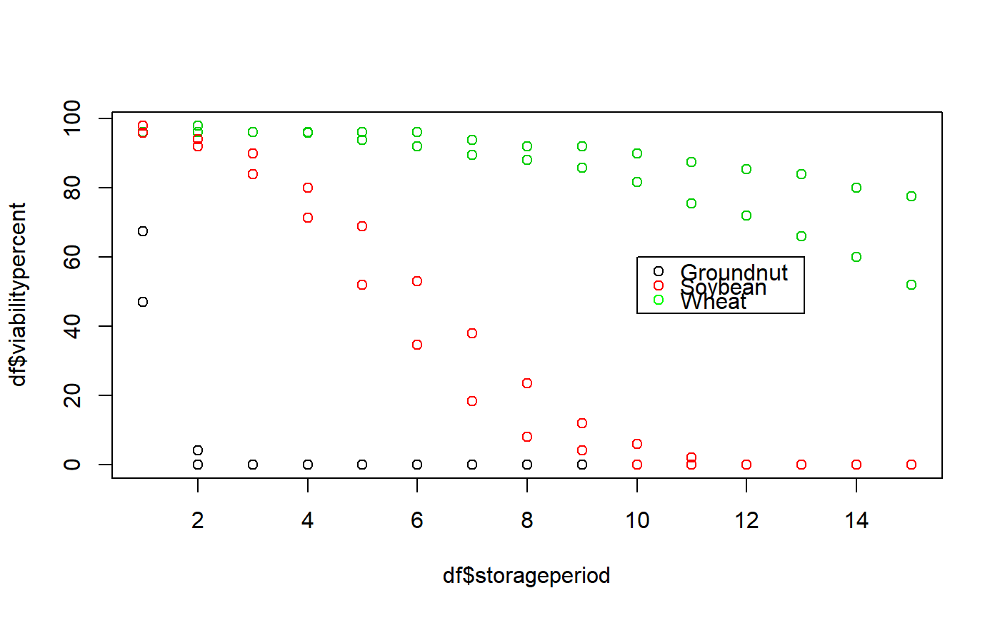

R/FitSigma.batch.R
FitSigma.batch.RdFit seed viability/survival curve to estimate multiple values of the seed lot constant (Ki) and the period to lose unit probit viability (σ) according to a grouping variable.
FitSigma.batch(data, group, ...)
| data | A data frame with the seed viability data recorded periodically. It should possess columns with data on
|
|---|---|
| group | The name of the column in |
| … | Arguments to be passed on to |
A list of class FitSigma.batch with the following components:
A data frame with the data used for computing the models.
A data frame with the group-wise values of model parameters, Ki and σ and the fit statistics.
data(seedsurvival) df <- seedsurvival[seedsurvival$moistruecontent == 7 & seedsurvival$temperature == 25, c("crop", "storageperiod", "rep", "viabilitypercent", "sampsize")] plot(df$storageperiod, df$viabilitypercent, col = df$crop)#---------------------------------------------------------------------------- # Generalised linear model with probit link function (without cv) #---------------------------------------------------------------------------- model1a <- FitSigma.batch(data = df, group = "crop", viability.percent = "viabilitypercent", samp.size = "sampsize", storage.period = "storageperiod", probit.method = "glm") model1a#> Generalised linear model with probit link function. #> group Ki sigma #> Groundnut 2.402050 0.4500519 #> Soybean 2.373913 2.3620603 #> Wheat 2.154888 8.7682357 #>#---------------------------------------------------------------------------- # Generalised linear model with probit link function (with cv) #---------------------------------------------------------------------------- model1b <- FitSigma.batch(data = df, group = "crop", viability.percent = "viabilitypercent", samp.size = "sampsize", storage.period = "storageperiod", probit.method = "glm", use.cv = TRUE, control.viability = 98) model1b#> Generalised linear model with probit link function. #> Control viability = 98% #> group Ki sigma #> Groundnut 2.453183 0.4457701 #> Soybean 2.543327 2.2522451 #> Wheat 2.501611 7.2669575 #> #> group #> Groundnut #> Soybean #> Wheat #> message #> WARNING: non-integer #successes in a binomial glm! \nWARNING: glm.fit: fitted probabilities numerically 0 or 1 occurred #> WARNING: non-integer #successes in a binomial glm! #> WARNING: non-integer #successes in a binomial glm!#---------------------------------------------------------------------------- # Linear model after probit transformation (without cv) #---------------------------------------------------------------------------- model2a <- FitSigma.batch(data = df, group = "crop", viability.percent = "viabilitypercent", samp.size = "sampsize", storage.period = "storageperiod", probit.method = "tflm") model2a#> Linear model after probit transformation. #> group Ki sigma #> Groundnut -1.733721 12.772161 #> Soybean 2.014134 2.810871 #> Wheat 2.103905 9.393616 #>#---------------------------------------------------------------------------- # Linear model after probit transformation (with cv) #---------------------------------------------------------------------------- model2b <- FitSigma.batch(data = df, group = "crop", viability.percent = "viabilitypercent", samp.size = "sampsize", storage.period = "storageperiod", probit.method = "tflm", use.cv = TRUE, control.viability = 98) model2b#> Linear model after probit transformation. #> Control viability = 98% #> group Ki sigma #> Groundnut -1.769103 12.516718 #> Soybean 2.055239 2.754653 #> Wheat 2.146842 9.205744 #>